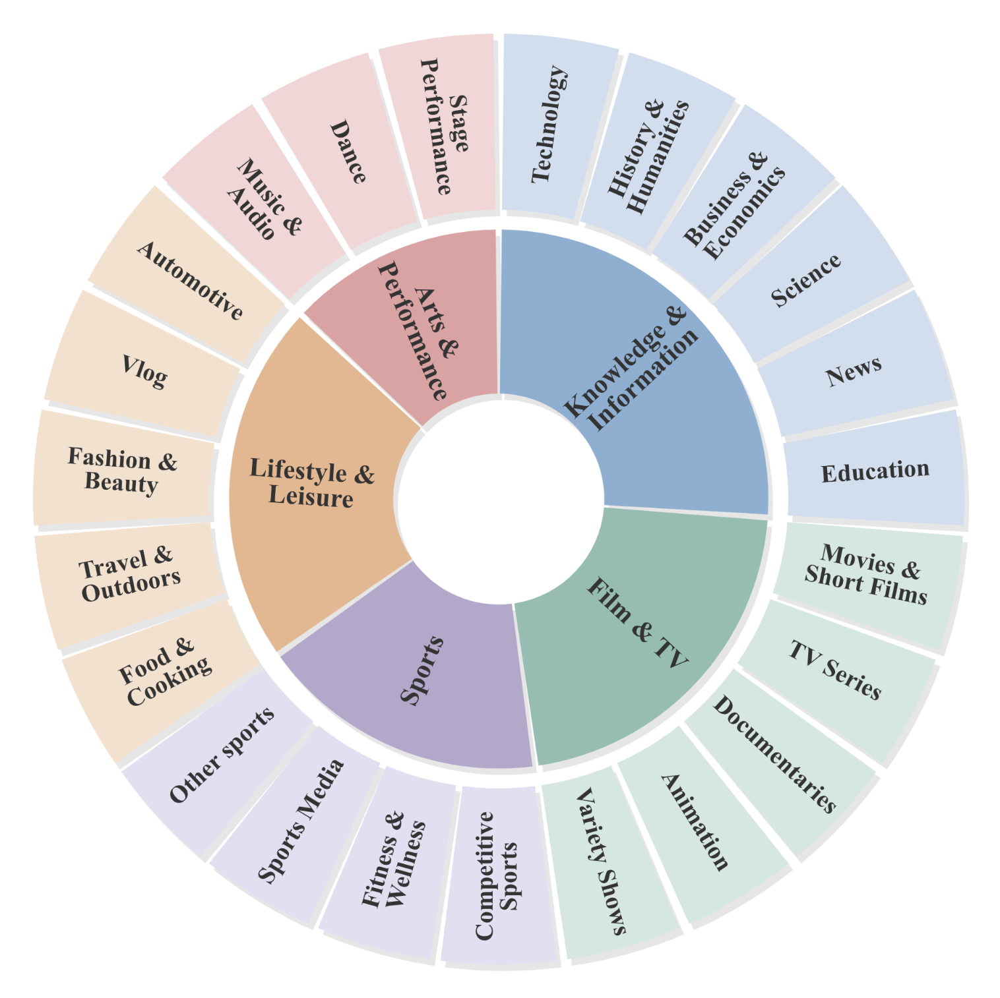
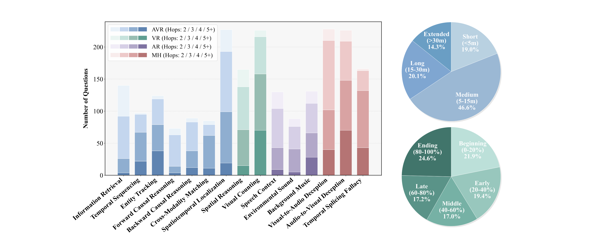
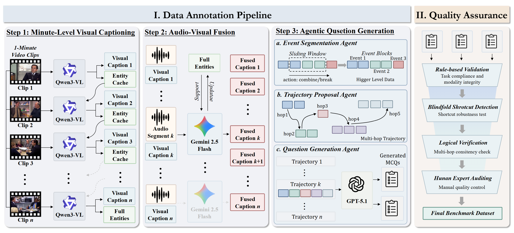
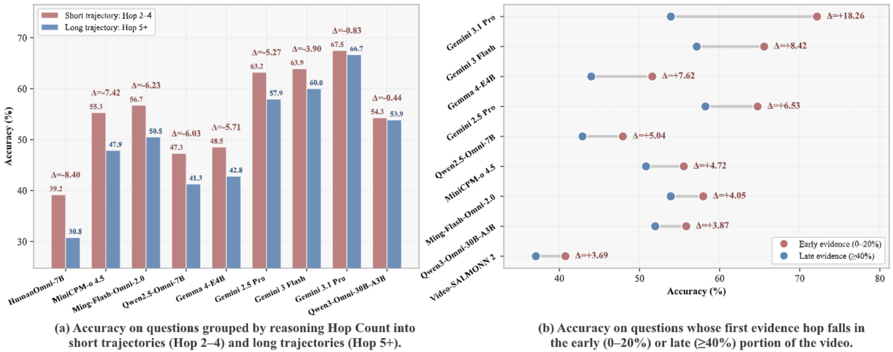

TraceAV-Bench
Benchmarking Multi-Hop Trajectory Reasoning over Long Audio-Visual Videos
Abstract
Real-world audio-visual understanding requires chaining evidence that is sparse, temporally dispersed, and split across the visual and auditory streams, whereas existing benchmarks largely fail to evaluate this capability. They restrict videos to short clips, isolate modalities, or reduce questions to one-hop perception.
We introduce TraceAV-Bench, the first benchmark to jointly evaluate multi-hop reasoning over long audio-visual trajectories and multimodal hallucination robustness. TraceAV-Bench comprises 2,200 rigorously validated multiple-choice questions over 578 long videos totaling 339.5 hours, spanning 4 evaluation dimensions and 15 sub-tasks. Each question is grounded in an explicit reasoning chain that averages 3.68 hops across a 15.1-minute temporal span. The dataset is built by a three-step semi-automated pipeline followed by a strict quality assurance process.
Evaluation of multiple representative OmniLLMs reveals that TraceAV-Bench poses a persistent challenge across all models, with the strongest closed-source model (Gemini 3.1 Pro) reaching only 68.29% on general tasks, and the best open-source model (Ming-Flash-Omni-2.0) reaching 51.70%, leaving substantial headroom. Moreover, robustness to multimodal hallucination is largely decoupled from general multimodal reasoning performance.
Key Features
Ultra-Long Videos
606–8394 s per video (avg. 2,112 s / ~35 min). Only benchmark with avg. duration beyond 30 min.
Multi-Hop Trajectories
Every question grounded in an explicit evidence chain of temporally dispersed, cross-modal hops.
4 Dims × 15 Tasks
Covering Audio-Visual Joint Reasoning, Visual- and Audio-Centric Reasoning, and Hallucination.
Hallucination Stress Test
Dedicated MH dimension: V2A deception, A2V deception, and temporal splicing fallacy.
Task Taxonomy
TraceAV-Bench organizes 15 sub-tasks under 4 evaluation dimensions.
Dataset Statistics
578 long videos (339.5 h) spanning 5 top-level genres and 30+ sub-genres, with durations overwhelmingly beyond 10 minutes.


Benchmark Construction Pipeline
A three-step semi-automated pipeline followed by a strict quality assurance stage.

Visual Captioning
Minute-level visual captioning with Qwen3-VL-32B, equipped with an Entity Cache for long-range identity tracking.
Asynchronous A-V Fusion
Gemini-2.5-Flash aligns 1-minute audio with visual narrative, and performs entity updates from audio evidence.
Agentic QA Generation
Event segmentation, trajectory proposal, and MCQ generation over explicit multi-hop evidence.
Quality Assurance
Multi-stage verification: blindfolded solver, deduplication, and LLM-based filtering.
Leaderboard
Accuracy (%) on 12 general sub-tasks across AVR / VR / AR dimensions. Best per task is bolded, best open-source is underlined.
| # | Model | AVR | VR | AR | Avg | |||||||||
|---|---|---|---|---|---|---|---|---|---|---|---|---|---|---|
| IR | TS | ET | FCR | BCR | CMM | SL | SR | VC | SC | ES | BM | |||
| Closed-source OmniLLMs (With Visual and Audio) | ||||||||||||||
| 1 | Gemini 3.1 Pro | 83.57 | 60.82 | 71.77 | 86.30 | 61.80 | 49.41 | 51.54 | 73.94 | 41.15 | 96.92 | 63.64 | 78.63 | 68.29 |
| 2 | Gemini 2.5 Pro | 83.57 | 63.92 | 60.48 | 76.71 | 50.56 | 54.12 | 48.02 | 68.48 | 39.38 | 83.85 | 65.91 | 67.18 | 63.52 |
| 3 | Gemini 3 Flash | 82.14 | 53.61 | 65.32 | 83.56 | 59.55 | 49.41 | 29.07 | 73.33 | 36.73 | 86.92 | 61.36 | 66.41 | 62.28 |
| 4 | Gemini 2.5 Flash | 75.00 | 58.76 | 62.10 | 75.34 | 58.43 | 40.00 | 29.07 | 66.06 | 39.38 | 81.54 | 60.23 | 62.60 | 59.04 |
| 5 | Gemini 2 Flash | 66.43 | 53.61 | 58.06 | 64.38 | 43.82 | 41.18 | 25.11 | 54.55 | 27.43 | 70.00 | 55.68 | 58.78 | 51.59 |
| Open-source OmniLLMs (With Visual and Audio) | ||||||||||||||
| 1 | Ming-Flash-Omni-2.0 | 56.43 | 53.61 | 47.58 | 57.53 | 40.45 | 44.71 | 31.28 | 65.45 | 39.38 | 63.85 | 56.82 | 63.36 | 51.70 |
| 2 | Qwen3-Omni-30B-A3B | 47.14 | 51.55 | 35.48 | 43.84 | 50.56 | 40.00 | 32.60 | 58.18 | 38.50 | 63.85 | 59.09 | 60.31 | 48.43 |
| 3 | OmniVinci-9B | 49.29 | 44.33 | 38.71 | 57.53 | 34.83 | 35.29 | 33.48 | 55.15 | 34.51 | 65.38 | 65.91 | 54.20 | 47.38 |
| 4 | MiniCPM-o 4.5 | 45.71 | 36.08 | 37.90 | 28.77 | 26.97 | 41.18 | 37.44 | 60.61 | 38.50 | 61.54 | 59.09 | 64.12 | 44.83 |
| 5 | Qwen2.5-Omni-7B | 46.43 | 32.99 | 37.10 | 30.14 | 35.96 | 37.65 | 37.44 | 49.70 | 35.40 | 60.00 | 52.27 | 49.62 | 42.06 |
| 6 | Gemma 4-E4B | 39.29 | 38.14 | 37.10 | 36.99 | 29.21 | 36.47 | 16.74 | 55.15 | 34.07 | 55.38 | 54.55 | 58.02 | 40.93 |
| 7 | Video-SALMONN 2 | 42.14 | 41.24 | 29.03 | 30.14 | 29.21 | 32.94 | 31.28 | 48.48 | 39.38 | 47.69 | 47.73 | 44.27 | 38.63 |
| 8 | HumanOmni-7B | 37.86 | 31.96 | 29.84 | 31.51 | 31.46 | 25.88 | 35.68 | 55.15 | 34.96 | 52.31 | 51.14 | 44.27 | 38.50 |
| 9 | VideoLLaMA2.1-AV-7B | 36.43 | 29.90 | 25.81 | 17.81 | 16.85 | 25.88 | 22.91 | 38.79 | 38.94 | 36.15 | 39.77 | 35.88 | 30.43 |
| 10 | Baichuan-Omni-1.5 | 37.14 | 14.43 | 20.97 | 15.07 | 12.36 | 20.00 | 30.40 | 37.58 | 26.99 | 32.31 | 42.05 | 33.59 | 26.91 |
| Open-source Single-Modality MLLMs | ||||||||||||||
| 1 | Qwen3-VL-32B | 44.29 | 39.18 | 32.26 | 38.36 | 38.20 | 34.12 | 16.30 | 67.27 | 39.38 | 46.15 | 48.86 | 48.09 | 41.04 |
| 2 | Qwen3-VL-8B | 34.29 | 28.87 | 29.84 | 26.03 | 24.72 | 24.71 | 17.62 | 59.39 | 32.30 | 45.38 | 42.05 | 46.56 | 34.31 |
| 3 | Qwen2-Audio-7B | 30.71 | 27.84 | 33.06 | 20.55 | 26.97 | 29.41 | 29.96 | 26.67 | 23.45 | 38.46 | 37.50 | 44.27 | 30.74 |
| Open-source OmniLLMs (Visual Only) | ||||||||||||||
| 1 | Ming-Flash-Omni-2.0 (V-only) | 37.86 | 35.05 | 32.26 | 45.21 | 31.46 | 27.06 | 19.82 | 54.55 | 38.94 | 43.08 | 47.73 | 49.62 | 38.55 |
| 2 | Qwen3-Omni-30B-A3B (V-only) | 37.86 | 34.02 | 37.90 | 32.88 | 34.83 | 24.71 | 30.84 | 53.94 | 38.94 | 38.46 | 40.91 | 43.51 | 37.40 |
Abbreviations. AVR: IR = Information Retrieval, TS = Temporal Sequencing, ET = Entity Tracking, FCR = Forward Causal Reasoning, BCR = Backward Causal Reasoning, CMM = Cross-Modality Matching, SL = Spatiotemporal Localization. VR: SR = Spatial Reasoning, VC = Visual Counting. AR: SC = Speech Context, ES = Environmental Sound, BM = Background Music.
Hallucination Robustness (MH Dimension)
Accuracy (%) on the 3 Multimodal Hallucination sub-tasks. Models are sorted by MH Avg within each group; Gen. Avg is the average accuracy on the 12 general sub-tasks above.
| # | Model | V2A | A2V | TSF | MH Avg | Gen. Avg |
|---|---|---|---|---|---|---|
| Closed-source OmniLLMs | ||||||
| 1 | Gemini 3.1 Pro | 89.57 | 79.91 | 84.34 | 84.61 | 68.29 |
| 2 | Gemini 3 Flash | 76.52 | 75.55 | 87.35 | 79.81 | 62.28 |
| 3 | Gemini 2 Flash | 74.78 | 81.66 | 77.11 | 77.85 | 51.59 |
| 4 | Gemini 2.5 Pro | 79.13 | 74.24 | 75.90 | 76.42 | 63.52 |
| 5 | Gemini 2.5 Flash | 60.87 | 66.81 | 66.87 | 64.85 | 59.04 |
| Open-source OmniLLMs | ||||||
| 1 | Qwen3-Omni-30B-A3B | 65.65 | 69.87 | 66.87 | 67.46 | 48.43 |
| 2 | Ming-Flash-Omni-2.0 | 71.30 | 67.25 | 62.65 | 67.07 | 51.70 |
| 3 | Gemma 4-E4B | 74.35 | 69.43 | 56.02 | 66.60 | 40.93 |
| 4 | MiniCPM-o 4.5 | 70.87 | 72.05 | 56.63 | 66.52 | 44.83 |
| 5 | Qwen2.5-Omni-7B | 60.43 | 55.46 | 53.61 | 56.50 | 42.06 |
| 6 | OmniVinci-9B | 42.17 | 44.10 | 42.17 | 42.81 | 47.38 |
| 7 | Video-SALMONN 2 | 45.65 | 39.30 | 37.95 | 40.97 | 38.63 |
| 8 | HumanOmni-7B | 33.91 | 37.99 | 28.31 | 33.40 | 38.50 |
| 9 | Baichuan-Omni-1.5 | 28.26 | 41.48 | 22.29 | 30.68 | 26.91 |
| 10 | VideoLLaMA2.1-AV-7B | 35.22 | 29.69 | 19.88 | 28.26 | 30.43 |
To submit your model to the leaderboard, please open an issue or PR at our GitHub repository with your evaluation results.
Key Findings
Fine-grained analyses on TraceAV-Bench reveal persistent failure patterns of current OmniLLMs along reasoning depth, evidence position, and cross-modal reliability.

Multi-hop degradation
Accuracy drops consistently as the required reasoning trajectory lengthens (2–4 hops → 5+ hops), with only the strongest models maintaining small gaps.
Primacy bias
Models are systematically more accurate when the first evidence hop lies early (0–20%) in the video than late (≥40%) — a +3.7~+18.3% gap across all models.
Error-entropy scaling
Error distributions converge as comprehension accuracy grows (Pearson r = 0.726): weaker models fail in diverse ways, stronger models fail on a shared set of hard questions.
MH ⟂ comprehension
Per-model correlation between hallucination robustness and general reasoning is near zero — MH robustness is largely decoupled from general multimodal ability.
Data & Usage
1. Clone the repository
git clone https://github.com/Heinz217/TraceAV-Bench.git
cd TraceAV-Bench2. Download source videos
Each video id in data/*.json is resolved through
data/video_name_mapping.json. Videos are either from
OmniVideoBench
or fetched directly from YouTube via https://www.youtube.com/watch?v=<id>.
Save them as <video_id>.mp4 under a flat directory (e.g. ~/traceav_videos/).
3. Data format
{
"task_type": "v_visual_counting",
"video_count": 219,
"question_count": 226,
"items": [
{
"question_id": 1,
"video_id": "video2",
"question": "...",
"options": {"A": "...", "B": "...", "C": "...", "D": "..."},
"question_type": "single", // "single" | "multiple"
"correct_options": ["C"],
"answer_text": "...",
"minute_hop_count": 40, // temporal span (minutes)
"hop_length_label": "long", // "short" | "medium" | "long"
"trajectory_with_timestamps": [
{
"event_id": 6,
"evidence": "...",
"label": "visual", // "visual" | "audio" | "audio-visual"
"reason": "...",
"timestamp_minute": 42,
"event_time_range": {"start_minute": 41, "end_minute": 44}
}
],
"difficulty": "medium" // "easy" | "medium" | "hard"
}
]
}4. Evaluate a model
# Example 1: evaluate Gemini via remote API
export BENCHMARK_DIR=$(pwd)/data
export GEMINI_API_KEY=<your_key>
bash eval/gemini/eval_gemini.sh
# Example 2: evaluate a local Qwen3-VL checkpoint
export QWEN3VL_MODEL_PATH=/path/to/Qwen3-VL-32B-Instruct
export QWEN3VL_CLEANED_DIR=$(pwd)/data
export QWEN3VL_VIDEOS_DIR=/path/to/videos
bash eval/qwen3_vl/eval_qwen3_vl.sh
# Example 3: evaluate an OpenAI-compatible vLLM server
export BENCHMARK_DIR=$(pwd)/data
export LVBENCH_BASE_URL=http://127.0.0.1:8000
bash eval/qwen3_omni_instruct/eval_qwen3_omni_instruct.shBibTeX
@article{feng2026traceavbench,
title = {TraceAV-Bench: Benchmarking Multi-Hop Trajectory Reasoning over Long Audio-Visual Videos},
author = {Feng, Hengyi and Liang, Hao and Chen, Mingrui and Zeng, Bohan and Qiang, Meiyi and
Zhao, Zhengyang and Meng, Zimo and Sheng, Zeang and Zhang, Wentao},
journal = {arXiv preprint arXiv:XXXX.XXXXX},
year = {2026}
}